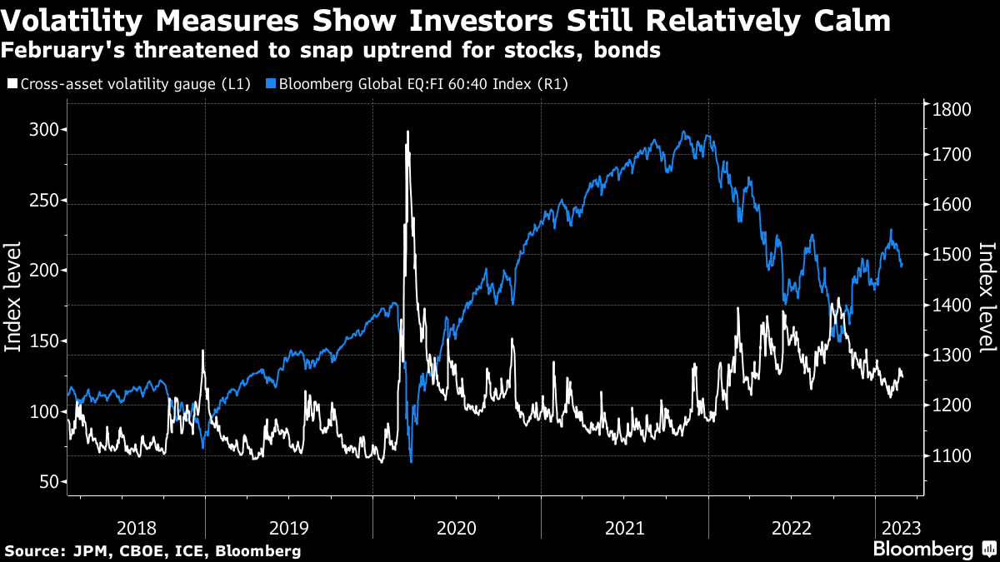

3月2日早间新闻
根据彭博社及路透社新闻编辑整合
头条新闻：
亚特兰大联储总裁博斯蒂克觉得联邦基金利率区间达到5%-5.25%就足够了；明尼亚波利斯联邦储备银行总裁卡什卡利倾向于继续进一步加息。
知情人士称，美国财政部高级官员，负责亚洲事务的副助理部长Robert Kaproth上周在北京会晤了中国同行，反映出财政部仍希望保持与中国的沟通渠道通畅。
美国制造业在2月连续第四个月萎缩，原材料价格上涨，但是新订单数量有所回升。2月制造业采购经理人指数(PMI)为47.7，与1月的47.4 相比变化不大。

中国周三的发布的经济数据显示，其经济活动正在快速复苏。美元下降。投资者对于加息的忧虑跟对中国开放的期望对冲掉了。情绪基本稳定。。。Multi Asset的performance在上涨，而其波动在下降。2023年果然是适合投资债券的一年。